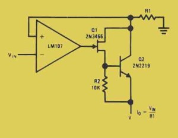

Precision current source is a special type of energy source which is used in several types types of electronic circuits, where constant current supply with stable amplitude is required in operation. Generally Opamp and different resistors are used to create a precision current source. The word precision actually means the quantity, or fact being accurate. So a precision current source is designed to produce a predetermined value of output current, and this device maintains that value. High precision differential amplifiers like Opamps are used because they are able to generate the accurate differential gain. The more the precision differential gain. more stable operation and high performance of the current source. The following connection diagram shows the basic diagram of a precision current source. LM 107 is the Opamp which is used here for amplifying the input signal. The input voltage signal is given to the inverted input terminal of the Opamp. And the non inverted input terminal is grounded via a resistance, here the resistor R1. Sometime this resistor is called as the current scaling resistor. The accuracy of the current source is depended upon the absolute accuracy of ratio of this current scaling resistor. The output current is simply the ratio of the input voltage and the series resistor connected with the non inverted input. The output voltage V is taken as the referance voltage of the differential gain.

 by
by